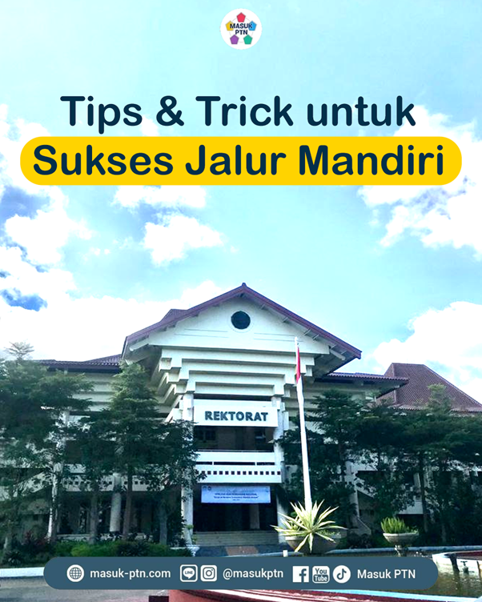

Menghadapi UTBK adalah salah satu momen paling mendebarkan dalam perjalanan pendidikan saya. Setiap hari diisi dengan belajar, latihan soal, dan mencoba mengatur waktu sebaik mungkin. Proses ini mengajarkan saya pentingnya konsistensi dan kesabaran dalam mencapai tujuan.
"Sukses bukan milik orang pintar, tapi milik mereka yang mau berusaha."B.J. Habibie
Artikel terkait sangat membantu dalam menyusun strategi belajar yang efektif agar lebih siap menghadapi soal-soal UTBK.
Sumber: masuk-ptn.com
Setelah gagal di jalur SNBP dan UTBK, saya hampir menyerah. Tapi saya sadar bahwa masih ada jalur mandiri yang bisa ditempuh. Dengan semangat baru, saya mulai mencari informasi, belajar lagi, dan mempersiapkan dokumen dengan baik. Akhirnya, usaha saya tidak sia-sia.
"Selama kita mau berusaha, selalu ada jalan." Anonim
Artikel ini memberikan banyak insight penting, terutama untuk memilih kampus dan memperkirakan peluang dengan lebih cermat.
Sumber: masuk-ptn.com